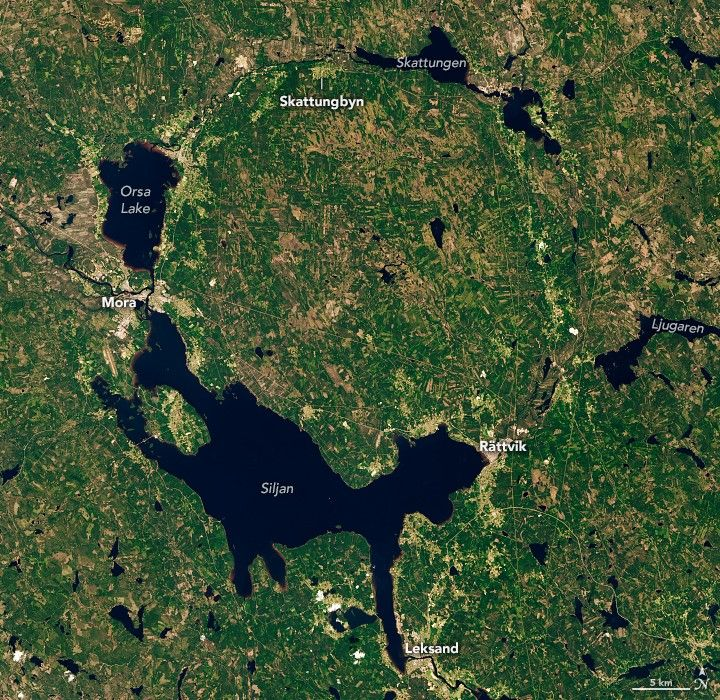

Blast From the Past: Sweden’s Siljan Ring
Impact craters exist on every continent on Earth. While many have eroded away or been buried by geologic activity, some remain visible from the ground and from above. This week, we revisit stories featuring some of our most captivating satellite images of impact sites around the planet. The images and text on this page were originally published on July 21, 2021.
Covered with lakes, forests, and mountains, Dalarna County has been called “Sweden in miniature.” But the same region that today draws people to its idyllic lakeside villages and midsummer celebrations was also the site of an ancient, catastrophic impact.
Around 380 million years ago, in the Late Devonian period, an asteroid slammed into the land that is now south-central Sweden. The impact left quite a mark. Even after hundreds of millions of years of erosion, the scar is still recognizable. It is especially apparent when viewed from above.
The Siljan impact structure, or “Siljan Ring,” is visible in this image, acquired on June 24, 2020, with the Operational Land Imager (OLI) on Landsat 8. Measuring more than 50 kilometers (30 miles) across, Siljan is the largest-known impact structure in Europe and among the top-20 largest on Earth.
Surveys of the structure have shown that the ground is slightly raised up across parts of the crater’s center. It is surrounded by a ring-like graben, or depression, which today is partially filled with water. Lake Siljan, on the crater’s southwest side, is the largest lake; it connects to Lake Orsa via a small river.
People have lived for millennia near the crater without knowing its cosmic origin. In the late 1960s, scientists used drill cores to uncover the complex and ancient geology deep below the ground.
Research at Siljan is ongoing today. In a 2019 study, scientists described how they used drill cores to find that the deep, fractured rocks in the crater were suitable for ancient life. A subsequent paper in 2021 described the fossilized remains of fungi discovered at a depth of more than 500 meters.